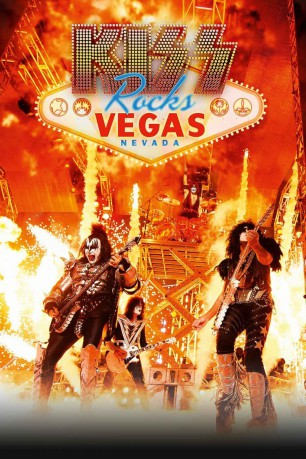

IMDB-Wertung: 8.0 / 10
IMDB-Wertung: 8.0 / 10  Metascore:
Metascore: 
For one night only. On 25 May 2016 Film of KISS' 9 day run of concerts at the Hard Rock Cafe in Las Vegas, Nevada in November 2014. Including exclusive behind the scenes footage. One night only.
 IMDB-Wertung: 8.0 / 10 Metascore:
For one night only. On 25 May 2016 Film of KISS' 9 day run of concerts at the Hard Rock Cafe in Las Vegas, Nevada in November 2014. Including exclusive behind the scenes footage. One night only.
Jahr: 2016
Dauer: 88 Minuten
FSK:
Land: USA Studio: Fortress Entertainment GroupTonspuren:
Untertitel:
Auflösung: 1080p (1920x1080) Größe: 7731 MB
Genre: Musik
Regisseur: Devin Dehaven
Drehbuch: David Feldshuh
Soundtrack:
Darsteller:
Datei: X:\Musik\Kiss Rocks Vegas (2016, FSK, 1920x1080).mkv seit 11.10.2016
Festplatte: HD Serien(SU-Z)+Dokus+Musik
 Es gibt insgesamt 134 Filme in der Gruppe 'Musik'
Es gibt insgesamt 134 Filme in der Gruppe 'Musik'